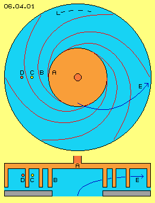
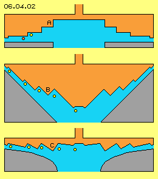
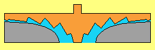
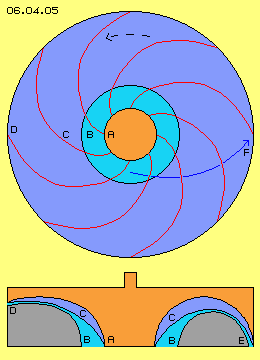
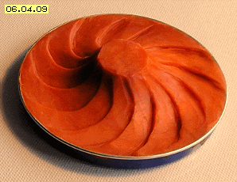

Suction- and Pressure-Sides

At this chapter, as an example, shows the design of blades of a pump. Instead of the common usage of pressure, here the effects of suction are used. Picture 06.04.01 at first schematic shows the rotor A (red) of a normal centrifugal-pump, upside by cross-sectional view, below by longitudinal cross-sectional view through the axle. Turning sense counter clockwise here is assumed all times.
Six blades B are drawn, between which canals (light blue) spiral run from inside outward. The fluid moves from the central area outward at bended tracks, here sketched as blue curve E.
A fluid particle D (dark red) is drawn nearby front side of blade. Fluid there is guided ahead in turning sense and outward by pressure of that wall and this outward-motion also corresponds to direction of inertia. So movement E showing forward-outward becomes generated by pressure plus centrifugal forces.
An other particle C (yellow) is drawn near back-side of blade. Fluid there is pressed ahead-outward indirectly by wall and neighbouring fluid. At the other hand, that wall moving forward affects suction and particles fall into these areas without resistance. So generated flow only partly is produced by mechanic pressure, because partly particles fall into wanted direction by ´own movement energy´.
Only Suction-Sides
Blades of previous picture practically represent spiral bands arranged at one level (here e.g. fixed at plane disk of rotor). At picture 06.04.02 now schematic is shown, these spiral-bands are pulled apart into axial direction, so downside border of one band is connected with upside border of next band.
Rotor inside thus is arranged as cone-like depression and its inner side is terraced. Inner space of rotor practically is negative shape of ´Babylon-tower´, thus round cone with spiral ´ways´ from bottom to top resp. vice versa. Particle (yellow) near vertical wall follows that back stepping surface downward-outward based on suction. Particle (red) near horizontal surface is moved downward by pressure. Between rotor and housing (grey) thus again results flow downward-forward, supported by centrifugal forces.
At this picture at B surface of rotor is cone-shaped, again with these stages of spiral-bands as suction-sides. Particles (yellow) near that back-stepping walls now are guided upward-outward only by suction. By this arrangement thus no more mechanical pressure is affected onto fluid, because outward-movement comes up only by centrifugal forces (especially if liquid medium is used). These ´teeth´ of blades only show suction-sides however no pressure-sides.

At this picture downside, housing-wall (grey) is shaped as round bended surface. Rotor again in principle is plane disk however dents now are shifted somehow different. Fluid, represented by some yellow particles, is dragged by each suction-side from centre towards outside border. ´Pressure-sides´ tilt down towards outside, so canal becomes smaller. However no pressure is affected but only cross-sectional surface keeps constant according to larger radius (resp. is decreased according to faster flow).
Flow only by Suction
At picture 06.04.03 housing wall (grey) again is shaped as round bended surface, now however also rotor-surface shows hyperbolic curvature, again by tooth-like steps.
´Round edges´ (resp. bowl-shapes) are especially suitable for these vane-teeth. Suction-sides practically stand cross to flow direction (resp. diagonal within space), while each ´pressure-side´ goes off smoothly into bended surface. So within that concave hole, teeth can stand one beside next. In addition, teeth ´grow-off´ central round surface and at the other hand disappear into surface near outside border.
Suction sides of that rotor still are spiral bands (analogue previous picture 06.04.01) arranged within shifted positions. These bands can be long-winded or can run more radial and more direct from inside towards outside. Cross-section all times shows that teeth-like steps, however flow runs diagonal and thus teeth appear more stretched into flow direction.
At this picture, four positions are shown while rotor is turning. Each suction side wanders from centre outward. Following animation shows these four pictures and there becomes obvious how fluid is pulled outward only by suction.

One can clearly see, teeth grow of centre and there at first makes fluid turning. Afterward, suction sides become wider and tilt towards outside, so some more fluid will follow that wall. Towards outside, suction wall becomes less height (and becomes correspondingly longer at larger radius), finally disappearing completely within surface of rotor.
Thus at outlet will exist continuous flat flow all around, generated only by suction, supported by centrifugal forces. So that technique will be optimum for many applications (e.g. see Suction-Helicopters of previous part).
Free Energy
These suction-vanes thus only use effect of back-stepping wall for generating flow. The energy input for driving the rotor is minimum, because the rotor affects null pressure onto the fluid, even no friction of fluid at rotor surface is to overcome. So these suction-blade-teeth produce flow with minimum efforts.
Self-acceleration comes up exclusively from normal chaotic molecular motions, where only these particles can move wider distances which occasionally and momentary are hit into direction of back-stepping wall. Flow here thus comes up exclusively by particles of preferred certain direction (towards suction side) flying longer ahead until hindered by next collision.

These particles are rejected at wall some later and move back slower, so as side-effect again cooling comes up. Finally fast flow at outlet shows less static pressure, so from inside towards outside well exists some pressure potential difference. Stronger static pressure at inlet thus pushes fluid from centre towards outside. In addition, fluid outside turns faster within space than inside, so by that sense again an out-turning potential vortex exists. Here however that´s not cause of acceleration but only side-effect.
Centrifugal forces support that movement direction. Centrifugal force by itself is ´for nothing´, however at first demanding according acceleration, normally thus input by mechanic work. Here however particles fly and accelerate ´by own motion energy´ into direction of suction. Finally at outlet, centrifugal force resp. inertia of flow represents kinetic energy, usable ´for free´.
At picture 06.04.05 previous machine once more is shown by cross-sectional and longitudinal views. Rotor A (red) shows round curvature, fluid moves from inlet B to outlet D diagonal within space at curved track F. Teeth C resp. suction sides run spiral and here rather short way towards outside.
Downside at longitudinal cross-sectional view at left side, outlet D is arranged aside of machine. As an alternative at right side is sketched, canal well could be arranged within half circle, so blades C practically lay within ´bowl´, so outlet E shows back into axial direction.
This arrangement could be expecially advangeous, if the dent-shaped blades are used at a turbine.
Turbine
Previous pump uses most few pressure because the application of pressure demand high energy-input. Much lower power-input is demanded for generatin a flow via suction. The acceleration comes up ´autonomous´, as the normal molecular motion are transferred into a little bit better structure. Resulting is an ordered flwo of high density and thus increased kinetic energy.
Opposite, a flow can be transferred into mechanical turning momentum of a turbine, only by deviation at the turbine-blades. All parts of the medium should be reflected at the pressure-faces. The medium shall not change its direction by falling into an ´empty´ area, thus withour affecting pressure in the turning sense of the turbine.

At previous pump the blades are designed that kind, they are affecting only by their suction-wall. In contrary sense, the medium affect only at the pressure-face of a turbine. That´s possible if previous teeth-shaped structure is applied mirrored respective in contrary turning sense.
Picture 06.04.09 shows a model of a turbine-rotor (without corresponding faces of a housing). The blades are shaped like ´horseshoes´, embedded within the round deepening of the rotor. The inlet flow enters the rotor all around form outside diagonal inward. The outlet flow is running off near the center in axial direction.
The inlet flow is faster than the rotation speed of the rotor. The fluid flies over the flat parts of a tooth, until hitting at a pressure-wall. The deviation occurs all along that wall. All parts of the fluid hit at such a wall, so the complete energy of the flow in transferred into turning momentum. Finally the fluid leaves the machine near the center in axial direction.
The blades of that turbine can be build relative easy - in comparison to the complex geometric of common turbine-blades. Up to now, most effective are working the
free-jet-turbines, because also there the fluid is deviated exclusive at pressure-sides of the blades. Previous suction-pump and also that new pressure-turbine may not fit to all applications (at following chapters will be discussed some examples). At any case however, these conceptions aree good example, how the motions of a fluid can be organized at its best.